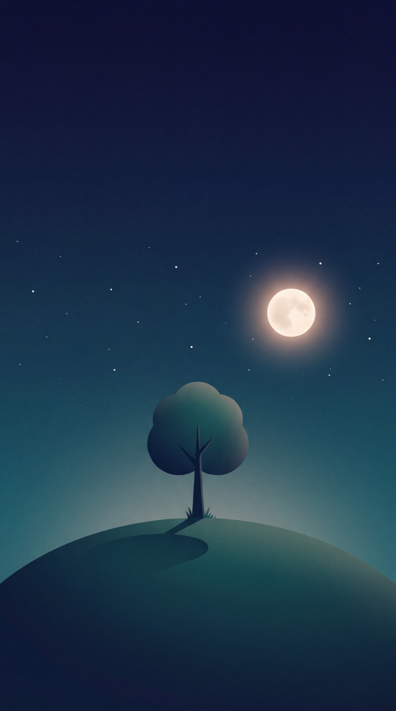
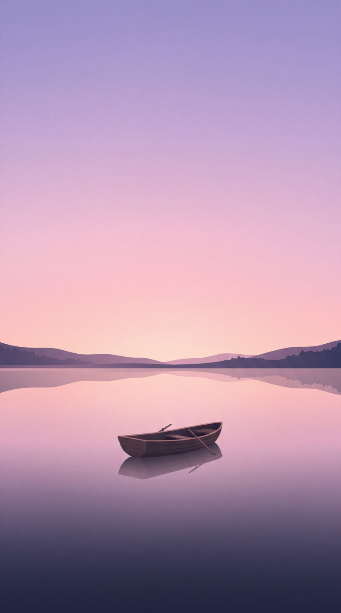
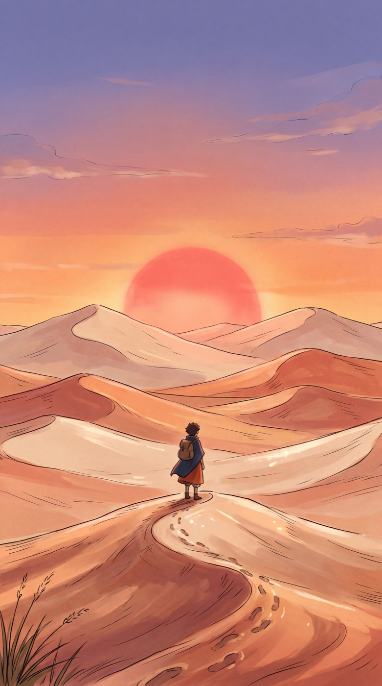
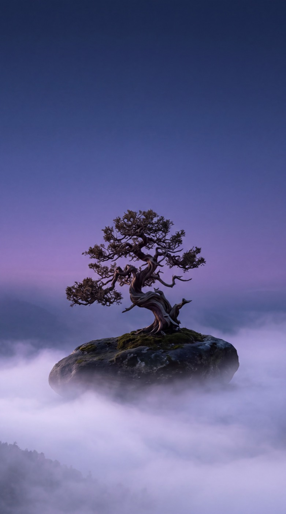
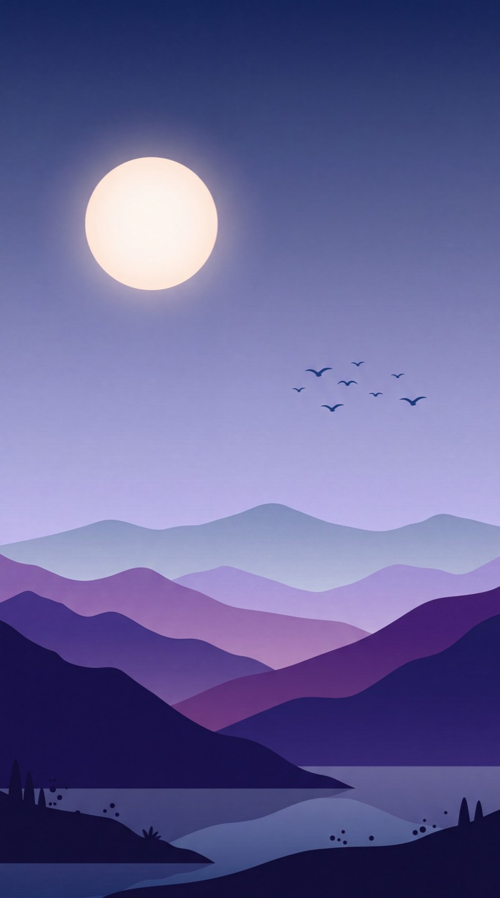

Koleksiyon
Minimal
Tek kayık, gece tepesi, sisli zirveler. Simgelerin arkasında ferah duran minimal duvar kağıtları.
10 duvar kağıdı · hepsi ücretsiz
Telefon 5

Gece Tepesi
Tek Kayık
Kızıl Güneş
Bulutların Üstünde Bonsai
Minimal Dağlar